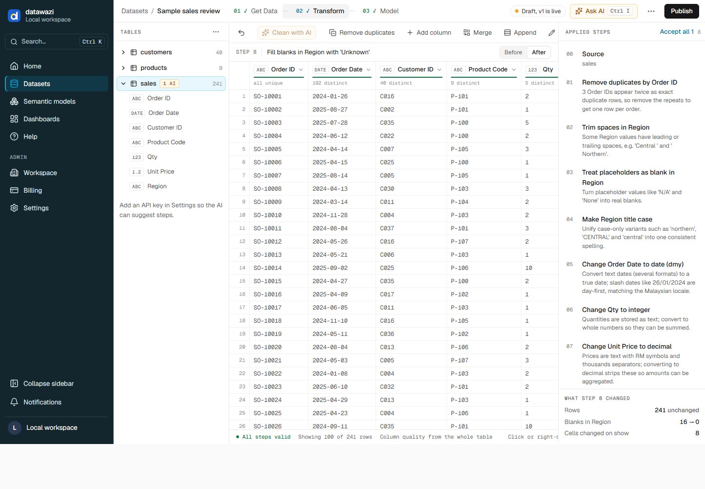
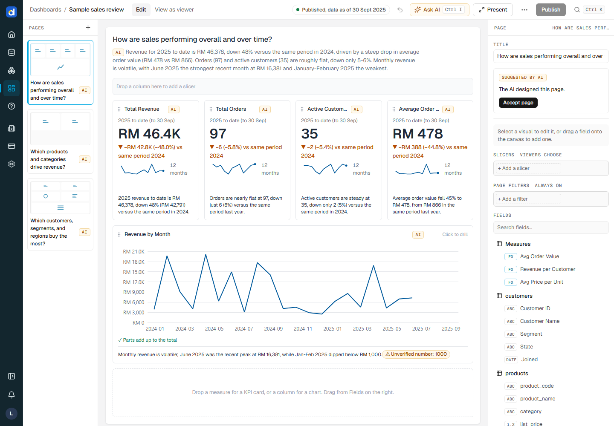

Related, with a date table
salescustomers
salesDateAI
The AI cleans, models and charts your data, and shows every change for you to approve. Nothing goes live until you do.

Upload CSV or Excel, link a OneDrive, SharePoint or Google Drive folder, or bring a Power BI file. Cleaning comes next.
Dates read day first, RM taken out of prices, blanks marked, repeats removed. Each step listed for you to approve.
Tables are related, a date table is added and measures are written. Every formula shown before anything uses it.
KPI cards and charts with each number checked against the data. Share it, or get it by email each week.
Autopilot cleans, relates, measures and builds on its own. Then it stops, so you review every change before anyone sees it.
For teams without a data analyst. The AI does the cleaning, modelling and charting, writes down every change, and waits for your approval.

Built for the meeting where someone asks “where does this number come from?”
AI work is marked amber and waits for you. Approve one change or all of them.
Row counts, missing columns, broken relationships and visuals: a failed refresh never goes live.
Column summaries by default; five sample rows only if you allow it. Never the whole table.
Row-level security by role or group, the same way Power BI does it.
The AI cleans, models and charts your data, and shows every change for you to approve.
The AI proposes steps from a fixed catalogue; the engine checks each one and refuses anything that breaks a table.
Tables, relationships and measures come across; DAX it can't translate is kept, not guessed.